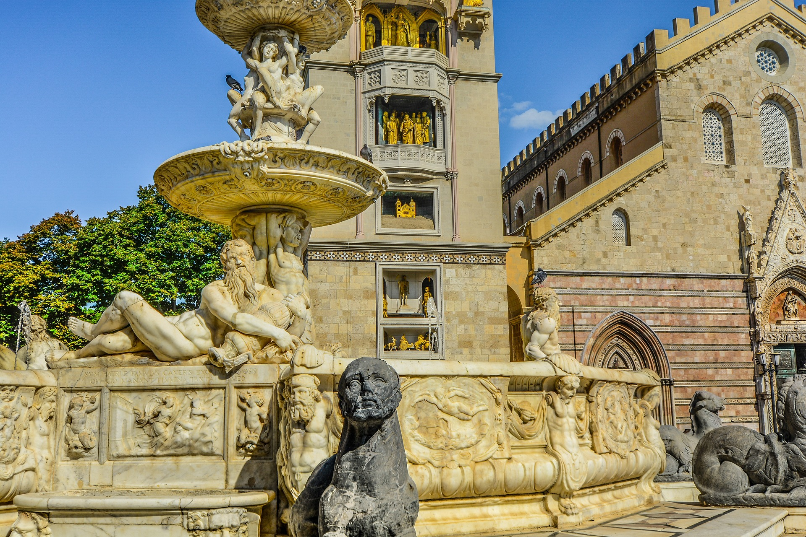
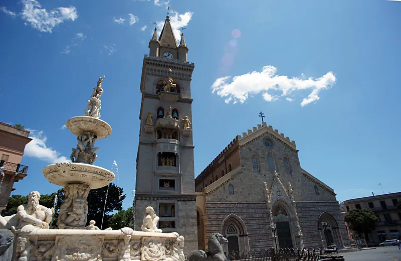
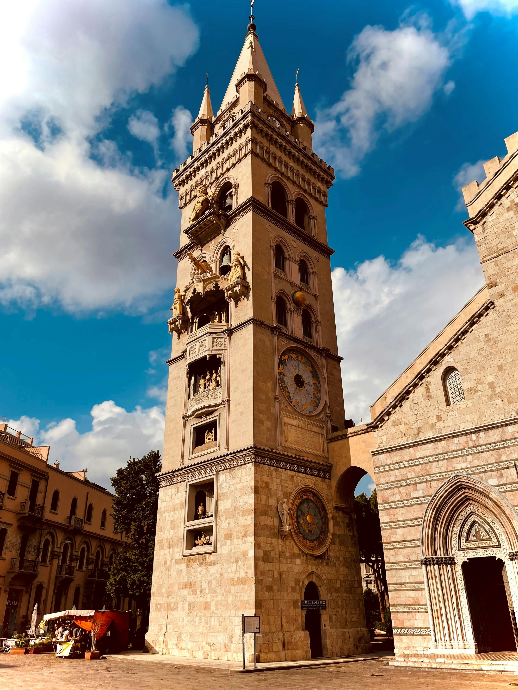
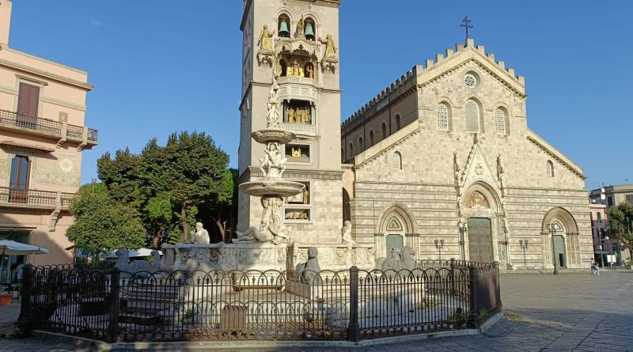
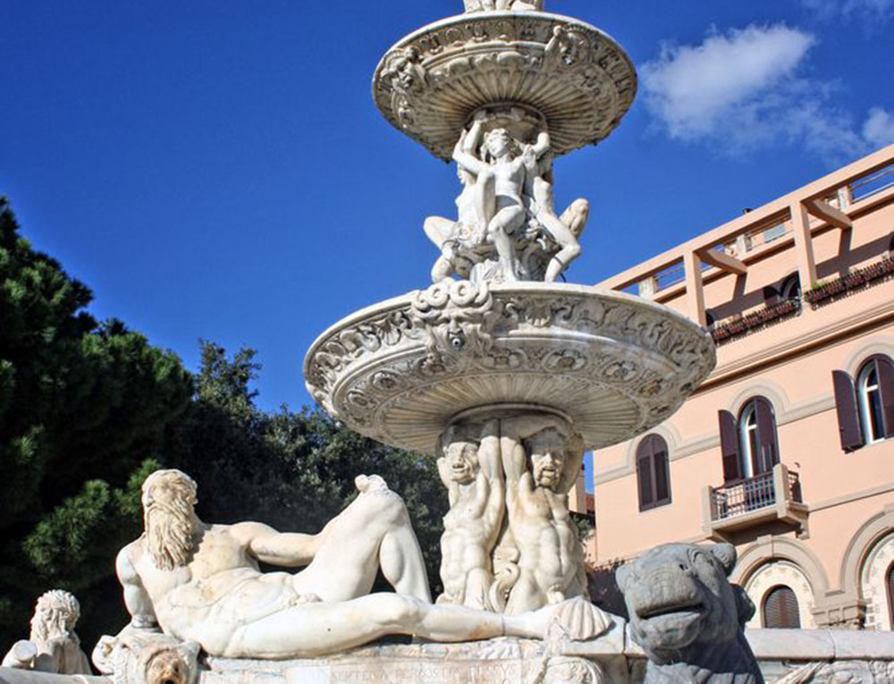
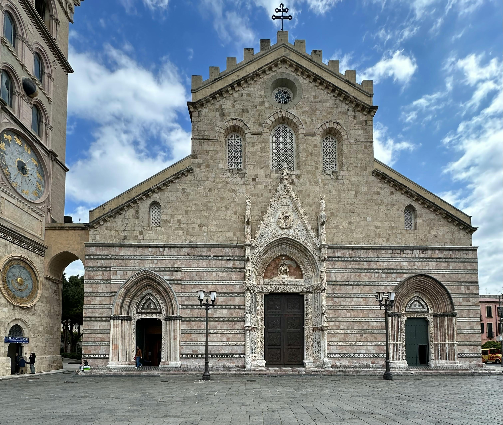
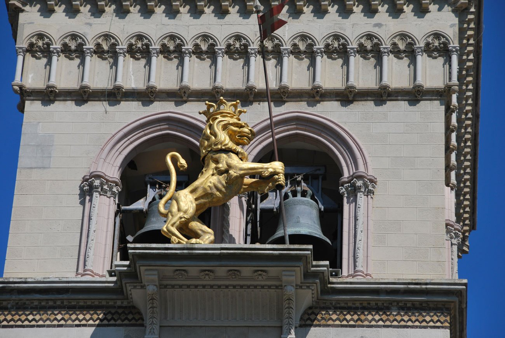

MESSINA

Piazza Duomo, Messina
Piazza Duomo è da secoli il centro della vita religiosa e civile messinese. La sua storia è segnata da due eventi drammatici: il terremoto del 1908, che rase al suolo quasi tutta la città, e i bombardamenti del 1943. Ogni monumento che vedi oggi è il risultato di ricostruzioni fedeli che hanno saputo preservare l'anima normanna e barocca originale.
La storia della Piazza
Nata nel XII secolo per volere di Ruggero II, la Cattedrale di Messina è un capolavoro normanno che ha sfidato i secoli. Dopo essere stata arricchita nel Rinascimento dalla splendida Fontana di Orione, la piazza è stata quasi cancellata dal terremoto del 1908 e dai bombardamenti del 1943. Ma dalle sue ceneri è nata una nuova meraviglia: il campanile del 1933, che ospita l'orologio astronomico più grande al mondo. Un meccanismo perfetto che ogni giorno, a mezzogiorno, anima le statue bronzee raccontando la gloriosa storia della città.
I Protagonisti della Piazza
La Cattedrale di Santa Maria Assunta,
fondata dai Normanni nel XII secolo, è una basilica maestosa che fonde stili normanni, gotici e barocchi. All'interno si possono ammirare le 24 colonne che dividono le navate, mentre all'esterno spicca il portale maggiore del XV secolo, uno dei pochi elementi sopravvissuti ai disastri naturali.
Il Campanile e l'Orologio Astronomico,
alto 60 metri, è l'elemento più celebre della piazza. Ricostruito negli anni '30, ospita l'orologio astronomico più grande e complesso al mondo. Ogni giorno, a mezzogiorno in punto, il meccanismo si anima per 12 minuti. Le statue di bronzo si muovono raccontando la storia della città: il leone ruggisce, il gallo canta e le eroine messinesi Dina e Clarenza suonano le campane.
La Fontana di Orione,
situata al centro della piazza, fu realizzata nel 1553 da Giovanni Angelo Montorsoli, allievo di Michelangelo. Fu definita dallo storico d'arte Bernard Berenson come "la più bella fontana del Cinquecento europeo".





Curiosità
Il leone che ruggisce
Il ruggito del leone sul campanile non è un suono elettronico, ma è prodotto da un sistema di mantici e ingranaggi meccanici, proprio come un antico organo.
La piazza più bassa
Dopo il terremoto del 1908, il suolo della piazza si è abbassato di oltre 50 centimetri rispetto al livello originale medievale.
